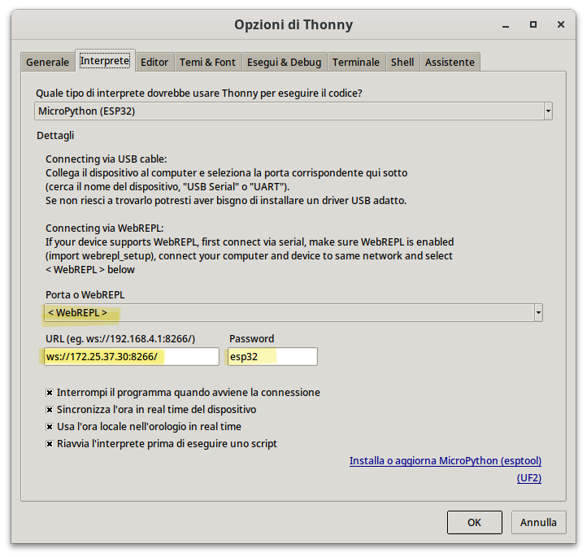
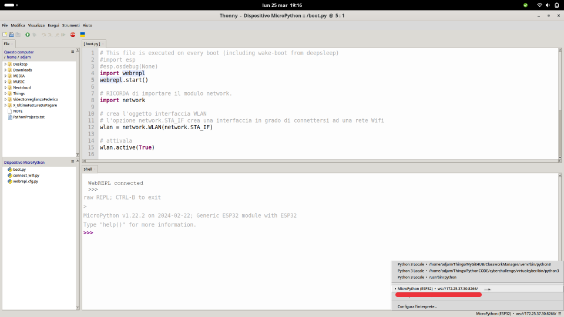

Connettere l'ESP32
In questa parte del corso andremo ad esplorare le potenzialità di rete presenti in ESP32! In particolare vedremo:
- come collegare l'ESP32 ad una rete WIFI
- come configurare l'ESP32 per creare una propria rete Wifi, a cui far connettere altri dispositivi.
- come gestire la connettività Bluetooth, presente nel microcontrollore.
Per la gestione del Wifi, si utilizza il modulo network, già disponibile nel bundle MicroPython.
Vediamo come
Collegarsi ad una rete Wifi
A volte visualizzare un pò di codice ben commentato rende le cose più semplici che tante parole...
# RICORDA di importare il modulo network.
import network
# crea l'oggetto interfaccia WLAN
# l'opzione network.STA_IF crea una interfaccia in grado di connettersi ad una rete Wifi
wlan = network.WLAN(network.STA_IF)
# attivala
wlan.active(True)
# scansiona per individuare le reti Wifi disponibili
network_list = wlan.scan()
# connette l'interfaccia WLAN alla rete Wifi SSID con chiave KEY
wlan.connect('ssid', 'key')
# controlla SE l'interfaccia è connessa al Wifi.
# Ritorna True/False
wlan.isconnected()
# visualizza la configurazione di rete.
# Ritorna la tupla ( 'IP', 'SubnetMask' , 'gateway' , 'DNS')
wlan.ifconfig()
Creare una rete Wifi Ad-hoc
Il codice che presentiamo adesso serve invece a configurare l'interfaccia WLAN per creare una propria rete Wifi, a cui evetualmente far connettere altri dispositivi.
Vediamo il codice:
# RICORDA di importare il modulo network.
import network
# crea l'oggetto interfaccia WLAN
# l'opzione network.AP_IF crea una interfaccia Access-Point
wlan = network.WLAN(network.AP_IF)
# Imposta il nome (si chiama SSID) della rete Wifi
wlan.config(ssid='NomeReteWifi')
# oppure
ap.config(ssid='NomeReteWifi' , security=3 , key="PasswordReteWifi")
# attivala
wlan.active(True)
L'IP predefinito in modalità Access Point è 192.168.4.1. I client connessi partono da .2.
Se voleste elencare i client connessi...
while True:
clients = ap.status("stations")
print(f"[WIFI] {len(clients)} stations connected")
for mac in clients:
for m in mac:
smac = f"{m[0]:02x}:{m[1]:02x}:{m[2]:02x}:{m[3]:02x}:{m[4]:02x}:{m[5]:02x}"
print(f"[WIFI] Station connected: {smac}")
time.sleep(1)
WebREPL
Tip
REPL sta per Read Evaluate Print Loop e non è nient'altro che il nome tecnico del prompt dei comandi di Python.
Sarebbe quella cosina dopo i 3 maggiori (>>>) che permette il più velocemente possibile di eseguire
un comando o di controllare il valore di una variabile.
Per accedere al prompt di MicroPython ci sono due modi:
-
collegando l'esp32 tramite USB al PC e interfacciandosi sulla porta virtuale seriale che si crea automaticamente. (Su Windows, sono le porte COM + un numero; su Linux e Mac, le porte ttyUSB + un numero).
-
collegandosi tramite wifi alla cosiddetta
WebREPL.
Ovviamente noi qui ci occupiamo del secondo caso. Alcune piccole precisazioni preliminari:
-
per connetterci alla
WebREPLdobbiamo prima di tutto essere collegati al wifi (e fino a qui...) -
per instaurare una connessione alla
WebREPLdell'esp32 occorre unWebREPL Client. Neanche a dirlo...Thonnyne ha uno incluso al suo interno... senza dover fare nulla!!!
Per utilizzare WebREPL dobbiamo prima di tutto configurarlo al meglio! Digitate nel prompt il seguente comando:
Abilitate l'esecuzione automatica all'avvio e scegliete la password di accesso.
Note
Facciamola facile!!! Mettiamo tutti la password esp32.
Ci sarà tempo per fare l'hardening del nostro sistema. Adesso favoriamo la semplicità di configurazione!!!
Warning
Terminata la configurazione webrepl dell'esp32, apparirà nel suo filesystem un file chiamato webrepl_cfg.py, contenente, tra le altre cose,
la password selezionata!
Non dovete toccarlo, modificarlo, cancellarlo... niente!!!
Altrimenti tutto risulterà perfettamente inutile...
Una volta individuato l'IP del vostro sistema riavviate l'esp32 e procedete a connettervi tramite WebREPL. Ecco le operazioni da fare su Thonny:
Sulle opzioni...

Infine, quando avete riavviato l'esp32, provate a connettervi selezionando il prompt corretto.

Web Server
# THE led
import machine
led = machine.Pin(5, machine.Pin.OUT)
led.value(1)
# THE web server
import socket
# ....
s = socket.socket(socket.AF_INET, socket.SOCK_STREAM)
s.bind(('', 80))
s.listen()
while True:
conn, addr = s.accept()
print('Got a connection from ', str(addr))
request = str( conn.recv(1024) )
if 'led=on' in request:
print('LED ON')
led.value(0)
if 'led=off' in request:
print('LED OFF')
led.value(1)
html = ""
html += '<h1>Web LED</h1>'
html += '<a href="/?led=on"><button class="button">ON</button></a>'
html += '<a href="/?led=off"><button class="button button2">OFF</button></a>'
conn.send('HTTP/1.1 200 OK\n')
conn.send('Content-Type: text/html\n')
conn.send('Connection: close\n\n')
conn.sendall(html)
conn.close()
Bluetooth
Quando arriva, arriva...